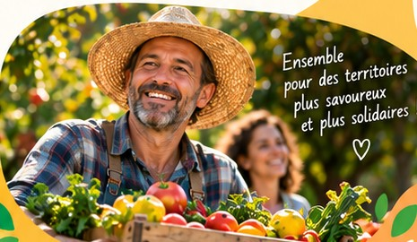
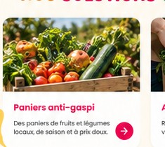
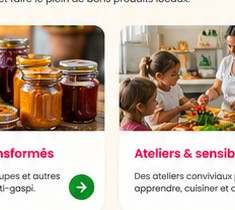
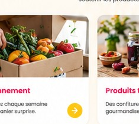
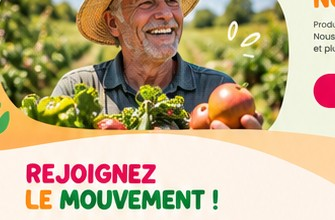

Aux côtés des producteurs, commerçants, artisans, associations et collectivités, nous faisons de chaque fruit et légume invendu une opportunité pour des territoires plus solidaires et durables.
Découvrir notre écosystème →

Ils cultivent avec passion et nous confient leurs invendus en toute confiance.

Ils soutiennent notre action et renforcent le lien avec le territoire.

Ils transforment les invendus en recettes gourmandes.

Elles nous aident à redistribuer, sensibiliser et faire rayonner notre action.